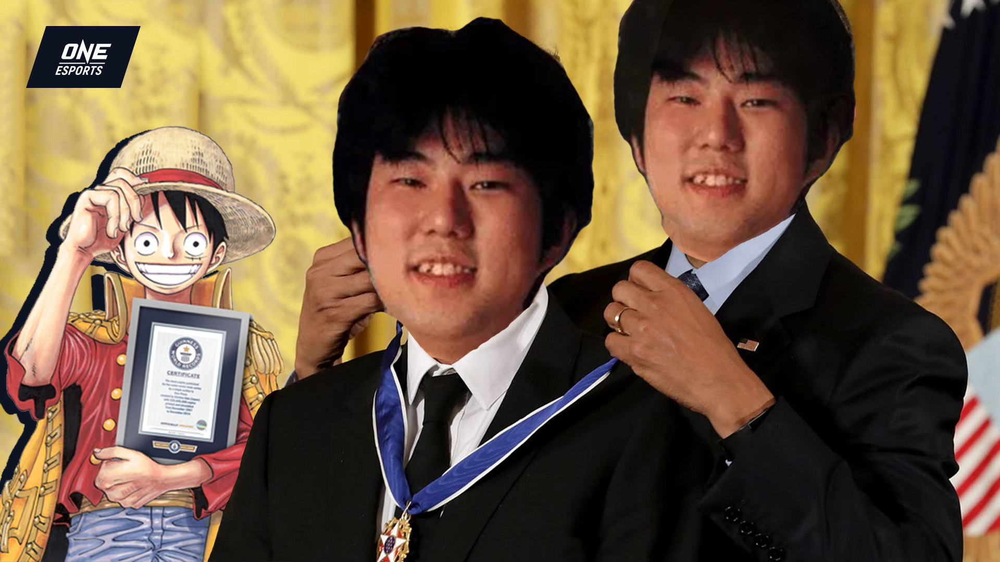

Eiichiro Oda is een Japans mangaka. Oda werd geboren in de prefectuur Kumamoto. Op zijn zeventiende ontving Oda de Tezuka Prijs voor de shortstory Wanted!. In 1993 werd zijn eerste zelfstandig getekende werk gepubliceerd Kami kara mirai no Present. kort daarna begon hij aan zijn magnum opus "one piece".